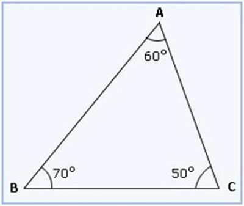

Acutangulo
T.Acutangulo
Lo primero que vamos a hacer para poder entrar de lleno en el establecimiento del significado del término triángulo acutángulo es conocer el origen etimológico de las dos palabras que le dan forma:
- Triángulo deriva del latín y es fruto de la suma de dos partes bien diferenciadas: el prefijo «tri-«, que es sinónimo de «tres», y el sustantivo «angulus», que es equivalente a «esquina».
- Acutángulo, por otro lado, también podemos decir que procede del latín. En su caso es fruto de la unión de «acutus», que puede traducirse como «agudo», y «angulus», que es sinónimo de «esquina» o «ángulo».
Un polígono es una figura plana delimitada por una cierta cantidad de segmentos, que reciben el nombre de lados. Cuando el polígono dispone de tres lados, se lo llama triángulo.

Solucion